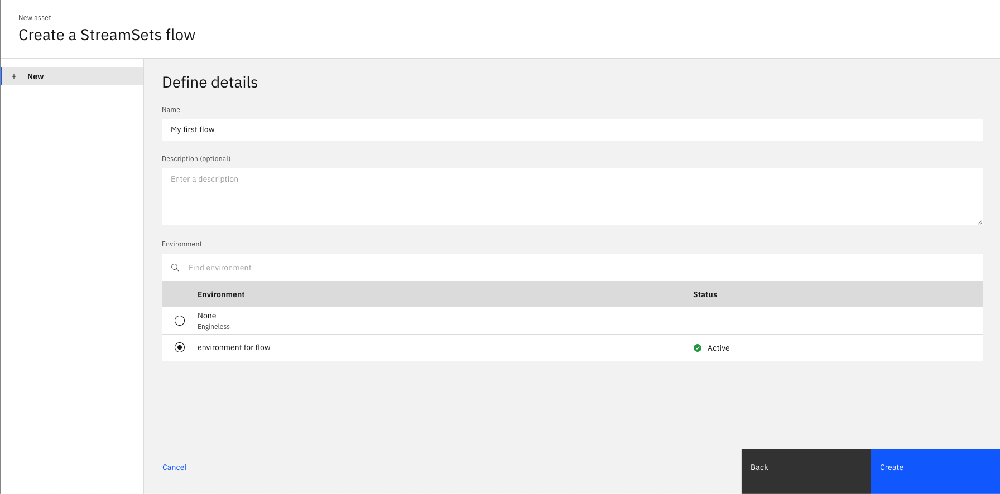
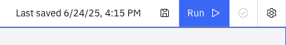
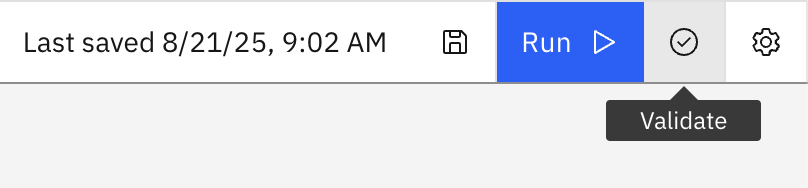

Flows#
A flow is an object used for storing the execution flow of a data pipeline. A flow is comprised of multiple stages with each stage defining how data is handled in that part of the execution flow.
- The SDK provides the following functionality to interact with flows:
Retrieving flows
Creating a flow
Editing a flow
Updating a flow
Duplicating a flow
Deleting a flow
Validating a flow
Handling error records
Prerequisites#
- To create a flow using the SDK, please make sure you have done the following steps:
Note
Currently, the SDK only supports creating a flow with an engine installed.
Retrieving Flows#
Flows can be retrieved through a Project object using the
Project.flows property.
You can also retrieve a single flow using the Project.flows.get() method
which requires the flow_id parameter.
>>> project.flows # a list of all the flows
[StreamsetsFlow(name='My first flow', description='optional description', flow_id='ea5b7ec1-3651-430d-9704-4b93791d6e03', engine_version='6.3.0-SNAPSHOT')]
>>> flow = project.flows.get(flow_id='ea5b7ec1-3651-430d-9704-4b93791d6e03')
>>> flow
StreamsetsFlow(name='My first flow', description='optional description', flow_id='ea5b7ec1-3651-430d-9704-4b93791d6e03', engine_version='6.3.0-SNAPSHOT')
Creating a Flow#
In the UI, you can create a flow by navigating to Assets -> New asset -> Create a flow.
Here, you will be required to choose an environment for your flow along with a name and description.
{kind=link}
In the SDK, you can create a flow from a Project object using the
Project.create_flow() method.
You are required to supply a name and environment parameters and an optional description parameter.
This method will return a StreamsetsFlow instance.
>>> flow = project.create_flow(name="My first flow", description="optional description", environment=environment)
>>> flow
StreamsetsFlow(name='My first flow', description='optional description', flow_id='58acfeb3-ee9e-4d1f-bbbd-4426cf7a9961', engine_version='6.3.0-SNAPSHOT')
Editing a Flow#
You can edit a flow in multiple ways.
For starters, you can edit a flow’s attributes like name or description.
>>> flow.description = "new description for the flow"
>>> flow
StreamsetsFlow(name='My first flow', description='new description for the flow', flow_id='ea5b7ec1-3651-430d-9704-4b93791d6e03', engine_version='6.3.0-SNAPSHOT')
You can edit a flow’s configuration through the StreamsetsFlow.configuration property.
This property returns a Configuration object which encapsulates a flow’s configuration.
You can print out the configuration and edit it similar to a dict.
>>> flow.configuration["retry_pipeline_on_error"]
True
>>> flow.configuration["retry_pipeline_on_error"] = False
Finally, you can edit a flow by editing its stages. This can include adding a stage, removing a stage, updating a stage’s configuration or connecting a stage in a different way than before. All the operations described are covered in the Stage documentation.
Updating a Flow#
In the UI, you can update a flow by making changes to the flow and hitting the “Save” icon to update the flow.
{kind=link}
In the SDK, you can make any changes to a StreamsetsFlow instance
in memory and update it by passing this object to Project.update_flow() method.
This method returns an HTTP response indicating the status of the update operation.
>>> flow.name = "new flow name" # you can also update the stages, configuration, etc.
>>> project.update_flow(flow)
<Response [200]>
Duplicating a Flow#
To duplicate a flow using the SDK, you need to pass a StreamsetsFlow instance
to the Project.duplicate_flow() method
along with the name parameter for the name of the new flow and an optional description parameter.
This will duplicate a flow and return a new instance of StreamsetsFlow.
>>> duplicated_flow = project.duplicate_flow(flow, name="duplicated flow", description=f"duplicate of {flow.name}")
>>> duplicated_flow
StreamsetsFlow(name='duplicated flow', description='duplicate of My first flow', flow_id='ee199ac5-1d4e-4875-91fb-110d85eb2c92', engine_version='6.3.0-SNAPSHOT')
Deleting a Flow#
To delete a flow in the UI, you can go to Assets, choose a flow and click on the three dots next to it and choose Delete.
{kind=link}
To delete a flow via the SDK, you need to pass a StreamsetsFlow instance
to the Project.delete_flow() method.
This method returns an HTTP response indicating the status of the update operation.
>>> project.delete_flow(duplicated_flow)
<Response [204]>
Validating a Flow#
In the UI, you can update a flow by making changes to the flow and hitting the “Validate” icon to validate the flow.
{kind=link}
To validate a flow via the SDK, you need to update a flow, and then pass it to the Project.validate_flow() method.
This will return a list of FlowValidationError instances if there are any errors.
>>> flow.add_stage("Trash")
Trash_01()
>>> project.update_flow(flow)
<Response [200]>
>>> project.validate_flow(flow)
[
FlowValidationError(type='stageIssues', instanceName='Trash_01', humanReadableMessage='The first stage must be an origin'),
FlowValidationError(type='stageIssues', instanceName='Trash_01', humanReadableMessage='Target must have input streams')
]
Handling Error Records#
To edit error record handling on the UI, click the gear icon on the top-right of the screen in a flow’s edit page.
This opens a new pop-up window with a tab for Error records on the left. This will let you adjust the error record handling for the flow.
{kind=link}
The page lets you change how error records are handled by policy and which stage should handle them.
Let’s learn how to change the policy first.
The possible options for error record policy are Original record as it was generated by the origin and
Record as it was seen by the stage that sent it to error stream.
In the SDK, these equate to ORIGINAL_RECORD and STAGE_RECORD.
This can be updated in a flow’s configuration.
>>> flow.configuration['error_record_policy']
'ORIGINAL_RECORD'
>>> flow.configuration['error_record_policy'] = 'STAGE_RECORD'
To change the error record stage, you can call StreamsetsFlow.set_error_stage() method.
You need to pass either the label or the name of the new error stage, you can also optionally pass in the new stage’s library.
Note
All error stages other than Discard will have configuration options for you to customize your experience.
>>> write_to_file = flow.set_error_stage("Write to File")
>>> write_to_file.configuration['directory'] = "/path/to/some/directory"
Finally, you can view the current error stage for a flow at any point using the StreamsetsFlow.error_stage property.
>>> flow.error_stage
WritetoFile_ErrorStage()